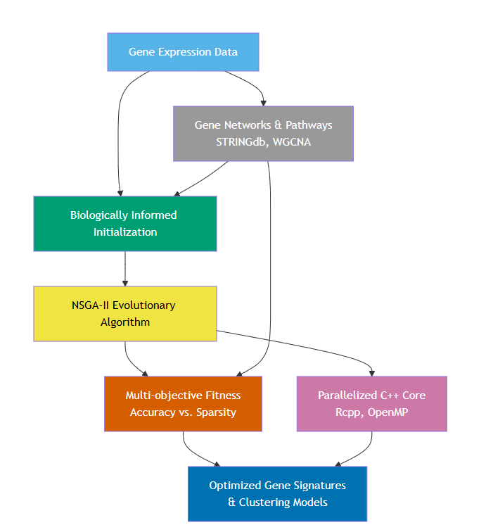

Abstract
Genetic algorithms (GAs) are optimization techniques inspired by the process of natural selection and genetics. They operate by evolving a population of candidate solutions over successive generations, with each individual representing a potential solution to the optimization problem at hand. Through the application of genetic operators such as selection, crossover, and mutation, the genetic algorithms iteratively improve the population by eventually converging towards optimal or near-optimal solutions. In the field of genomics, where data sets are often large, complex, and high-dimensional, the genetic algorithms offer a good approach for addressing optimization challenges such as feature selection, parameter tuning, and model optimization. By harnessing the power of evolutionary principles, genetic algorithms can effectively explore the solution space, identify informative features, and optimize model parameters, leading to improved accuracy and interpretability in genomic data analysis. The BioGA package extends the capabilities of genetic algorithms to the realm of genomic data analysis, providing a set of functions optimized for handling high throughput genomic data. Implemented in C++ for enhanced performance, BioGA offers efficient routines for tasks such as feature selection and model optimization. By integrating flawlessly with the Bioconductor ecosystem, BioGA empowers users to take advantage of the power of genetic algorithms within their genomics workflows, facilitating the discovery of biological insights from large-scale genomic data sets.Getting Started
Installation
To install this package, start R (version “4.3” or later) and enter:
if (!require("BiocManager", quietly = TRUE))
install.packages("BiocManager")
# The following initializes usage of Bioc devel
BiocManager::install(version='devel')
BiocManager::install(pkgs = "BioGA", version = "devel", force = TRUE)You can also install the package directly from GitHub using the
devtools package:
devtools::install_github("danymukesha/BioGA")With a simplified example, we illustrated the usage of BioGA for genetic algorithm optimization in the context of high throughput genomic data analysis. We showcased its interoperability with Bioconductor classes, demonstrating how genetic algorithm optimization can be integrated into existing genomics pipelines to improve the analysis and interpretation.
We demonstrated the usage of BioGA in the context of selecting the best combination of genes for predicting a certain trait, such as disease susceptibility.
Implementation
Algorithmic Framework
The core of BioGA is an NSGA-II evolutionary algorithm, tailored for the demands of high-throughput genomic data. Traditional implementations of NSGA-II operate on generic problem domains, whereas BioGA allows biologically informed variation at two stages of the evolutionary cycle: initialization can be guided by gene clusters, and mutation can be damped by a gene network. These optional inputs help keep solutions biologically plausible.
A notable feature is the multi-objective fitness function. In the real representation it minimises data fidelity (squared distance to the observed samples) and parsimony (L1 magnitude); in the binary representation it minimises the negated predictive signal of the selected genes and their cardinality. The two objectives conflict, so the algorithm returns a Pareto front of trade-off solutions. Fitness evaluation is parallelised with RcppParallel.
The computation is written in native C++ with Rcpp, yielding both speed and memory efficiency.
Software Architecture
BioGA’s
layered architecture is designed for modularity, scalability,
and user accessibility. At the top layer, a clean
R/Bioconductor interface makes the tool accessible to the bioinformatics
community. The user-facing wrappers bioga() and
bioga_fitness() accept either a plain numeric matrix or a
SummarizedExperiment (the first assay is used), so the tool
drops into existing genomic analysis pipelines.
The computational engine is written in C++ using Rcpp, parallelised with RcppParallel, enabling users to exploit multi-core architectures.
Finally, the package integrates with
SummarizedExperiment, so genomic matrices stored in
Bioconductor containers can be passed directly to the algorithm.
Optional biological knowledge (gene clusters and a gene network) can be
supplied by the user to guide initialization and mutation.
Biologically Informed Operators
A standout feature of BioGA is its ability to incorporate biological knowledge directly into the evolutionary process. Instead of relying on purely stochastic operations, BioGA uses known gene interaction networks to guide mutations and initialize populations. For example, genes selected for mutation can be constrained to lie within co-expression neighborhoods, reducing the likelihood of generating biologically implausible candidates.
Similarly, cluster-based initialization ensures that starting populations contain co-regulated gene sets. This can improve the convergence speed of the algorithm and increase the biological interpretability of the final solution. Network-constrained mutation damps changes to highly connected genes, promoting results that are biologically more plausible.
These biologically inspired innovations make BioGA particularly suited for applications in precision medicine, where model interpretability and biological validity are just as important as statistical performance.

Figure 1: Workflow of the BioGA algorithm. Gene expression data, optionally accompanied by gene clusters and a gene network, drives population initialization. This feeds into an NSGA-II evolutionary algorithm with a two-objective fitness function (fidelity and parsimony in real mode; predictive signal and sparsity in binary mode) and a parallelised C++ backend (Rcpp, RcppParallel). The result is a Pareto set of candidate gene signatures.
Advantages Over Existing Approaches
BioGA applies genetic algorithms to genomic data analysis. Its multi-objective optimization capability returns a spectrum of solutions, ranging from sparse, interpretable models to denser, more predictive ones. This is relevant for biomarker discovery or feature selection, where trade-offs between simplicity and fidelity must be balanced.
Additionally, BioGA’s C++ backend and parallel processing support avoid the overhead of interpreted R loops. By leveraging RcppParallel and memory-efficient data structures, it scales to genome-wide datasets far better than pure-R fitness evaluation.
Equally important is BioGA’s biological relevance. By allowing user-supplied gene clusters and a gene network, it lets discovered features be guided by biological context.
Comparison with Related Tools
Compared with general-purpose GA packages, BioGA
combines multi-objective optimisation, optional biological constraints
(clusters and network), parallel fitness evaluation, and
Bioconductor-friendly input through
SummarizedExperiment.
This combination is intended for bioinformatics labs seeking scalable and biologically informed optimization.
Limitations and Future Directions
Despite its strengths, BioGA has several current limitations that present opportunities for future work. One such area is GPU acceleration, which is not implemented in the current release and is a natural direction for later development.
Another direction is multi-omics integration. BioGA currently targets gene expression matrices; extending it to methylation, copy number variation, or proteomics inputs is a natural future step.
Cloud deployment (for example via containers) is likewise a possible future development rather than a current feature.
BioGA addresses a common need in modern genomics: the ability to perform efficient, interpretable optimization on high-dimensional data. By combining a C++ core, multi-objective optimization via NSGA-II, and optional biological knowledge (gene clusters and a gene network), BioGA returns sets of solutions for problems such as feature selection and biomarker discovery.
The optional biological inputs let users bias the search toward plausible solutions, so results are easier to interpret than those of a purely random GA. The package is intended for academic research, translational bioinformatics, and similar settings that demand reproducible optimization on genomic data.
Overview
Genomic data generally refers to the genetic information stored in the DNA of an organism. The DNA molecules are basically made up of a sequence of nucleotides (adenine, thymine, cytosine, and guanine).
The genetic information likely provides clear understanding into various biological processes, such as gene expression, genetic variation, and evolutionary relationships.
In this context, genomic data could consist of gene expression profiles measured across different individuals (e.g., patients).
Where:
- Each row in the
genomic_datamatrix represents a gene, and each column represents a patient sample.
and
- Values in the matrix represent the expression levels of each gene in each patient sample.
As an example of genomic data, let’s consider have a table similar to the following:
| Gene | Sample.1 | Sample.2 | Sample.3 | Sample.4 |
|---|---|---|---|---|
| Gene1 | 0.1 | 0.2 | 0.3 | 0.4 |
| Gene2 | 1.2 | 1.3 | 1.4 | 1.5 |
| Gene3 | 2.3 | 2.2 | 2.1 | 2.0 |
In the table above, each row represents a gene (or genomic feature), and each column represents a sample. The values in the matrix represent some measurement of gene expression, such as mRNA levels or protein abundance, in each sample.
For instance, the value 0.1 in “Sample 1” for
Gene1 indicates the expression level of Gene1 in
“Sample 1”. Similarly, the value 2.2 in “Sample 2” for
Gene3 indicates the expression level of Gene3 in
“Sample 2”.
Genomic data can be used in various analyses, including genetic
association studies, gene expression analysis, and comparative genomics.
In the context of the evaluate_fitness_cpp function,
genomic data is used to calculate fitness scores for individuals in a
population.
Just to clarify, an individual is “feature” typically in the context of genetic algorithm optimization.
The population represents a set of candidate combinations of genes that could be predictive of the trait (a specific characteristic of an individual, which is determined by the genes).
The important information that we need to know is if a gene is part
of this set or not. In the binary representation each individual in the
population is represented by a vector indicating the presence or absence
of each gene, while the real representation evolves continuous
expression profiles. The representation is selected with the
representation argument ("real" by default, or
"binary" when class labels are supplied).
For example, a set of candidate genes (a population) might be represented as [1, 0, 1], indicating the presence of Gene1 and Gene3 but the absence of Gene2. The population undergoes genetic algorithm operations such as selection, crossover, mutation, and replacement to evolve towards individuals with higher predictive power for the trait.
BioGA Genomic Analysis with GEO Dataset
The following case study outlines (but does not evaluate, so the
vignette builds offline) a full GA workflow using a GEO dataset
(GSE10072, lung cancer gene expression) stored in a
SummarizedExperiment object. It covers data preprocessing,
BioGA
execution, and visualization of results.
Introduction
As described above, BioGA is an
R package for genetic algorithm (GA) optimization of high-throughput
genomic data. Here, we outline a full GA workflow using a lung cancer
gene expression dataset (GEO GSE10072) stored in a
SummarizedExperiment object. The illustrative aim is to
obtain a sparse gene set; supervised evaluation of that set (for example
with a held-out classifier) is performed externally, keeping selection
and validation separate.
Load required packages:
library(BioGA)
library(SummarizedExperiment)
library(GEOquery)
library(BiocParallel)
library(ggplot2)
library(pheatmap)
library(dplyr)
library(caret)
library(xgboost)
library(randomForest)
library(pROC)
library(parallel)
library(doParallel)
library(iml)
library(lime)
library(caretEnsemble)
library(survminer)
library(survival)
library(timeROC)Data Preparation
We use GEO GSE10072, a lung cancer dataset with gene expression profiles. Download and preprocess the data:
geo_data <- GEOquery::getGEO("GSE10072", GSEMatrix = TRUE)[[1]]
se <- as(geo_data, "SummarizedExperiment")
genomic_data <- assay(se) # expression matrix (genes x samples)
genomic_data <- genomic_data[1:1000, ]
dim(genomic_data)Phenotype data:
pheno <- pData(geo_data)
pheno$Age <- as.numeric(as.character(pheno$`Age at Diagnosis:ch1`))
pheno$Gender <- factor(pheno$`Gender:ch1`)
pheno$Stage <- factor(pheno$`Stage:ch1`)
set.seed(42)
pheno$time <- sample(200:2000, nrow(pheno), replace = TRUE)
pheno$status <- sample(c(0, 1), nrow(pheno), replace = TRUE)Gene Clustering (Optional)
We can cluster genes to exploit co-expression structure:
cor_matrix <- cor(t(genomic_data))
hc <- hclust(as.dist(1 - cor_matrix), method = "average")
clusters <- cutree(hc, k = 20)
table(clusters)Plot dendrogram of genes:
plot(hc, labels = FALSE, main = "Hierarchical Gene Clustering Dendrogram")Running BioGA
Let’s set up the GA parameters:
population_size <- 30
num_generations <- 25
crossover_rate <- 0.9
eta_c <- 20
mutation_rate <- 0.05
num_parents <- 20
num_offspring <- 20
num_to_replace <- 10
weights <- c(1.0, 0.3) # Scaling factors for the two objectivesWe run the GA:
result <- bioga_main_cpp(
genomic_data = genomic_data,
population_size = population_size,
num_generations = num_generations,
crossover_rate = crossover_rate,
eta_c = eta_c,
mutation_rate = mutation_rate,
num_parents = num_parents,
num_offspring = num_offspring,
num_to_replace = num_to_replace,
weights = weights,
seed = 2025,
clusters = clusters)Pareto Visualization
df <- data.frame(
Fidelity = result$pareto_fitness[, 1],
Parsimony = result$pareto_fitness[, 2])
ggplot(df, aes(x = Fidelity, y = Parsimony)) +
geom_point(color = "steelblue") +
labs(title = "BioGA Pareto Front", x = "Data fidelity (f1)", y = "Parsimony (f2)") +
theme_classic()Convergence Analysis
bioga_main_cpp returns history, the best
value of the first objective at each generation, so convergence can be
plotted directly:
fitness_trace <- result$history
ggplot(data.frame(Generation = 1:num_generations, Fitness = fitness_trace),
aes(x = Generation, y = Fitness)) +
geom_line(color = "steelblue", linewidth = 1) +
labs(title = "Best Fitness Convergence Across Generations",
y = "Best Fitness (first objective)",
x = "Generation") +
theme_classic()Visualize Final Population
Let’s see the last generation’s population diversity:
pheatmap(result$population,cluster_rows = TRUE,cluster_cols = TRUE,
main = "Final Population of Individuals")Gene Selection Frequency
In the real representation the second objective shrinks gene magnitudes but does not force exact zeros, so a strict selected/not-selected frequency is not appropriate. Instead we rank genes by their mean absolute value across the final population:
gene_importance <- colMeans(abs(result$population))
barplot(gene_importance, las = 2,
main = "Mean Absolute Gene Value in Final Population",
ylab = "Mean |value|", col = "darkgreen")For a strict binary gene signature, run bioga_main_cpp()
with representation = "binary" and class
labels, then use
colMeans(result$population > 0.5).
Network Constraints Example
We could incorporate a network if available. For demonstration, build a random network:
n <- nrow(genomic_data)
network <- matrix(runif(n^2, 0, 1), nrow = n)
network <- (network + t(network)) / 2
diag(network) <- 0Apply mutation with the network constraint:
mutated_with_net <- mutation_cpp(
result$population, mutation_rate, iteration = 20,
max_iterations = num_generations, network = network)
pheatmap(mutated_with_net,
main = "Population After Network-Constrained Mutation")Feature Selection
Select the best individual and rank genes by magnitude. Because the real representation shrinks values without setting them exactly to zero, we take the top genes by absolute value rather than thresholding at zero.
best_idx <- which.min(result$fitness[, 1])
best_individual <- result$population[best_idx, ]
k <- 50
selected_genes <- order(abs(best_individual), decreasing = TRUE)[seq_len(k)]
selected_gene_names <- rownames(genomic_data)[selected_genes]
cat("Number of selected genes:", length(selected_genes), "\n")
cat("Selected gene names:", head(selected_gene_names), "...\n")Machine Learning Pipeline
⚠️ This part of machine learning might take a very long time to
execute. However, we provide you few of examples of its pipeline code
(eval=FALSE)
. Data Preparation
X <- t(genomic_data[selected_genes, ])
y <- as.factor(pData(geo_data)$`source_name_ch1`)
# y <- pheno$Stage # other example outcome: cancer stage (categorical)
levels(y) <- make.names(levels(y))
set.seed(42)
train_idx <- createDataPartition(y, p = 0.7, list = FALSE)
X_train <- X[train_idx, ]
X_test <- X[-train_idx, ]
y_train <- y[train_idx]
y_test <- y[-train_idx]Using CARET
Training and Evaluation
# This part performs parallelized training and ROC evaluation
# of Random Forest, XGBoost, and Logistic Regression models using caret.
# It uses cross-validation with ROC as the performance metric
# and plots ROC curves for both training and testing sets.
cl <- makeCluster(parallel::detectCores() - 1)
registerDoParallel(cl)
ctrl <- trainControl(
method = "repeatedcv", number = 5, repeats = 3, classProbs = TRUE,
summaryFunction = twoClassSummary, allowParallel = TRUE)
set.seed(123)
models <- list(
rf = train(X_train, y_train, method = "rf",
trControl = ctrl, metric = "ROC"),
xgb = train(X_train, y_train, method = "xgbTree",
trControl = ctrl, metric = "ROC"),
glm = train(X_train, y_train, method = "glm",
family = "binomial", trControl = ctrl, metric = "ROC"))
train_probs <- lapply(models, predict, newdata = X_train, type = "prob")
test_probs <- lapply(models, predict, newdata = X_test, type = "prob")
roc_train <- lapply(train_probs, function(p) roc(y_train, p[, 2]))
roc_test <- lapply(test_probs, function(p) roc(y_test, p[, 2]))
plot(roc_train$rf, col = "darkred", main = "Train ROC Curves")
plot(roc_train$xgb, add = TRUE, col = "darkgreen")
plot(roc_train$glm, add = TRUE, col = "blue")
legend("bottomright", c("RF","XGB","GLM"),
col = c("darkred", "darkgreen", "blue"), lwd = 2)
plot(roc_test$rf, col = "darkred", main = "Test ROC Curves")
plot(roc_test$xgb, add = TRUE, col = "darkgreen")
plot(roc_test$glm, add = TRUE, col = "blue")
legend("bottomright", c("RF","XGB","GLM"),
col = c("darkred","darkgreen","blue"), lwd = 2)
stopCluster(cl)
registerDoSEQ()
varImpPlot(models$rf$finalModel, n.var = 20,
main = "Top 20 Optimized Features (Random Forest)")Confusion Matrix
pred_rf <- predict(models$rf, X_test)
cm <- confusionMatrix(pred_rf, y_test)
cm$table
fourfoldplot(cm$table, color = c("#99d8c9", "#fc9272"),
conf.level = 0, margin = 1, main="Confusion Matrix RF Test Set")Ensemble Stacking
cl <- makeCluster(parallel::detectCores() - 1)
registerDoParallel(cl)
models_list <- caretList(
x = X_train,
y = y_train,
trControl = trainControl(
method = "repeatedcv", number = 5, repeats = 3, classProbs = TRUE,
summaryFunction = twoClassSummary, allowParallel = TRUE),
methodList = c("glm", "xgbTree"))
ensemble_model <- caretEnsemble(models_list)
summary(ensemble_model)
# pred_ensemble <- predict(ensemble_model, newdata =head(X_test))
# confusionMatrix(pred_ensemble, y_test)
stopCluster(cl)
registerDoSEQ()Alternative
cl <- makeCluster(parallel::detectCores() - 1)
registerDoParallel(cl)
glm_model <- glm(Stage ~ .,
data = data.frame(Stage = y_train, X_train),
family = binomial())
label_train <- as.numeric(y_train) - 1
label_test <- as.numeric(y_test) - 1
dtrain <- xgb.DMatrix(data = as.matrix(X_train), label = label_train)
dtest <- xgb.DMatrix(data = as.matrix(X_test), label = label_test)
params <- list(
objective = "binary:logistic", eval_metric = "auc",
max_depth = 6, eta = 0.1)
xgb_model <- xgb.train(params, dtrain,
nrounds = 100,
watchlist = list(train = dtrain), verbose = 0)
stopCluster(cl)
registerDoSEQ()
pred_prob_xgb <- predict(xgb_model, dtest)
pred_prob_glm <- predict(glm_model, newdata = data.frame(X_test), type = "response")
roc_xgb <- pROC::roc(label_test, pred_prob_xgb)
roc_glm <- pROC::roc(label_test, pred_prob_glm)
plot(roc_xgb, col = "blue", main = "ROC Curves")
plot(roc_glm, col = "red", add = TRUE)
legend("bottomright", legend = c("XGBoost", "Logistic Regression"), col = c("blue", "red"), lwd = 2)
cutoff_xgb <- coords(roc_xgb, "best", ret = "threshold") |> as.numeric()
pred_class_xgb <- as.factor(ifelse(pred_prob_xgb > cutoff_xgb, levels(y)[2], levels(y)[1]))
conf_mat <- caret::confusionMatrix(pred_class_xgb, y_test)
print(conf_mat)
fourfoldplot(conf_mat$table, color = c("#CC6666", "#99CC99"), conf.level = 0, margin = 1, main = "Confusion Matrix")SHAP and LIME Explanation of XGBoost Model
cl <- makeCluster(parallel::detectCores() - 1)
registerDoParallel(cl)
# SHAP
X_test_df <- as.data.frame(X_test)
predictor <- Predictor$new(xgb_model, data = X_test_df, y = label_test,
predict.function = function(model, newdata) {
predict(model, xgb.DMatrix(as.matrix(newdata)))})
shap <- Shapley$new(predictor, x.interest = X_test_df[1, ])
plot(shap)
shap_values <- shap$results
barplot(shap_values$phi, names.arg = shap_values$feature, las = 2, main = "SHAP Values Waterfall")
# LIME explanation
explainer <- lime(X_train, xgb_model, bin_continuous = TRUE)
explanation <- explain(X_test_df[1:3, ], explainer, n_features = 10)
plot_features(explanation)
stopCluster(cl)
registerDoSEQ()Calibration Plots
calib <- caret::calibration(y_test ~ pred_prob_xgb, class = TRUE)
xyplot(calib)Survival Analysis
The following survival example is illustrative only: it requires proper time-to-event and censoring metadata, which must be obtained from the dataset’s clinical annotation (a categorical variable such as tumour stage is not a substitute for follow-up time and event status).
options(expressions = 10000)
surv_data <- data.frame(
time = pheno$time, status = pheno$status,
t(genomic_data[selected_genes, ]))
cox_formula <- as.formula(paste(
"Surv(time, status) ~",
paste(colnames(surv_data)[-(1:2)], collapse = "+")))
cox_model <- coxph(cox_formula, data = surv_data)
#summary(cox_model)
# Kaplan-Meier curve stratified by median risk score
surv_data$risk_score <- predict(cox_model, surv_data, type = "risk")
median_risk <- median(surv_data$risk_score)
surv_data$risk_group <- ifelse(surv_data$risk_score > median_risk,
"High Risk", "Low Risk")
fit <- survfit(Surv(time, status) ~ risk_group, data = surv_data)
ggsurvplot(fit, data = surv_data, pval = TRUE, risk.table = TRUE)Time-dependent ROC for Survival
time_roc <- timeROC(T = surv_data$time, delta = surv_data$status,
marker = surv_data$risk_score, cause = 1, times = c(365, 730, 1095))
plot(time_roc, time = 365)Results for the application of the pkg
Interpreting the Results
BioGA
optimises two competing objectives and returns the final population, its
fitness scores, the per-generation best first objective
(history), the best individual, and the first non-dominated
front (pareto_population, pareto_fitness). The
first objective (data fidelity in "real" mode, predictive
signal in "binary" mode) is minimised together with the
second objective (parsimony/sparsity). Because the two objectives can
conflict, the result is a set of trade-off solutions rather than a
single optimum; users select from the Pareto front according to how many
genes they are willing to include.
The history vector reports the best first objective at
each generation. With elitist replacement it is non-increasing, which
makes it a convenient convergence diagnostic.
Fitness evaluation is parallelised with RcppParallel, so
runtime scales with the number of available cores; use
RcppParallel::setThreadOptions(numThreads = N) to control
it. We do not report fixed speedup numbers here because they depend
heavily on the dataset and hardware.
How to Validate Biologically
BioGA returns candidate gene sets; biological validation is then the analyst’s responsibility. A practical workflow is:
- Run BioGA in
"binary"mode with classlabelsto obtain a Pareto front of gene subsets of varying size. - Pick one or more subsets from
pareto_populationaccording to the desired sparsity. - Validate the subsets with an external classifier or survival model using an independent train/test split, and interpret them with pathway or enrichment databases.
This keeps optimisation and validation strictly separate, avoiding the optimistic bias that arises when the same data are used to both select and score a signature.
We deliberately do not report specific accuracy, gene-count or pathway numbers here, since those depend entirely on the dataset and on the external validation model used.
Other Optimisation Problems
The exported operator functions
(initialize_population_cpp,
evaluate_fitness_cpp, selection_cpp,
crossover_cpp, mutation_cpp,
replacement_cpp) can be combined into a user-written
evolutionary loop. This makes it possible to experiment with alternative
objectives, although the high-level bioga_main_cpp loop
itself ships only the genomic objectives described above.
Session Info
sessioninfo::session_info()